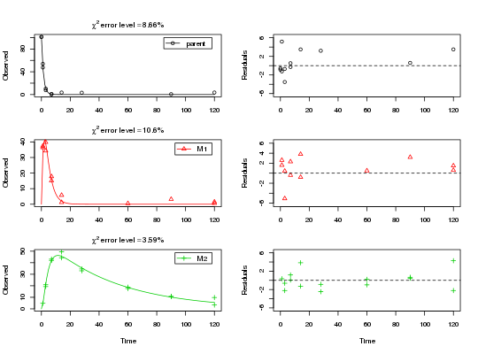

The 12 datasets were generated using four different models and three different variance components. The four models are either the SFO or the DFOP model with either two sequential or two parallel metabolites.
Variance component 'a' is based on a normal distribution with standard deviation of 3, Variance component 'b' is also based on a normal distribution, but with a standard deviation of 7. Variance component 'c' is based on the error model from Rocke and Lorenzato (1995), with the minimum standard deviation (for small y values) of 0.5, and a proportionality constant of 0.07 for the increase of the standard deviation with y.
Initial concentrations for metabolites and all values where adding the variance component resulted
in a value below the assumed limit of detection of 0.1 were set to NA.
As an example, the first dataset has the title SFO_lin_a and is based on the SFO model
with two sequential metabolites (linear pathway), with added variance component 'a'.
Compare also the code in the example section to see the degradation models.
synthetic_data_for_UBA_2014
A list containing datasets in the form internally used by the 'gmkin' package. The list has twelfe components. Each of the components is one dataset that has, among others, the following components
titleThe name of the dataset, e.g. SFO_lin_a
dataA data frame with the data in the form expected by mkinfit
Ranke (2014) Prüfung und Validierung von Modellierungssoftware als Alternative zu ModelMaker 4.0, Umweltbundesamt Projektnummer 27452 Rocke, David M. und Lorenzato, Stefan (1995) A two-component model for measurement error in analytical chemistry. Technometrics 37(2), 176-184.
m_synth_SFO_lin <- mkinmod(parent = list(type = "SFO", to = "M1"), M1 = list(type = "SFO", to = "M2"), M2 = list(type = "SFO"), use_of_ff = "max")#>m_synth_SFO_par <- mkinmod(parent = list(type = "SFO", to = c("M1", "M2"), sink = FALSE), M1 = list(type = "SFO"), M2 = list(type = "SFO"), use_of_ff = "max")#>m_synth_DFOP_lin <- mkinmod(parent = list(type = "DFOP", to = "M1"), M1 = list(type = "SFO", to = "M2"), M2 = list(type = "SFO"), use_of_ff = "max")#>m_synth_DFOP_par <- mkinmod(parent = list(type = "DFOP", to = c("M1", "M2"), sink = FALSE), M1 = list(type = "SFO"), M2 = list(type = "SFO"), use_of_ff = "max")#>summary(fit)#> mkin version: 0.9.45.2 #> R version: 3.4.0 #> Date of fit: Fri May 5 12:46:23 2017 #> Date of summary: Fri May 5 12:46:23 2017 #> #> Equations: #> d_parent/dt = - k_parent * parent #> d_M1/dt = + f_parent_to_M1 * k_parent * parent - k_M1 * M1 #> d_M2/dt = + f_M1_to_M2 * k_M1 * M1 - k_M2 * M2 #> #> Model predictions using solution type deSolve #> #> Fitted with method Port using 381 model solutions performed in 2.203 s #> #> Weighting: none #> #> Starting values for parameters to be optimised: #> value type #> parent_0 101.3500 state #> k_parent 0.1000 deparm #> k_M1 0.1001 deparm #> k_M2 0.1002 deparm #> f_parent_to_M1 0.5000 deparm #> f_M1_to_M2 0.5000 deparm #> #> Starting values for the transformed parameters actually optimised: #> value lower upper #> parent_0 101.350000 -Inf Inf #> log_k_parent -2.302585 -Inf Inf #> log_k_M1 -2.301586 -Inf Inf #> log_k_M2 -2.300587 -Inf Inf #> f_parent_ilr_1 0.000000 -Inf Inf #> f_M1_ilr_1 0.000000 -Inf Inf #> #> Fixed parameter values: #> value type #> M1_0 0 state #> M2_0 0 state #> #> Optimised, transformed parameters with symmetric confidence intervals: #> Estimate Std. Error Lower Upper #> parent_0 102.1000 1.71400 98.5800 105.5000 #> log_k_parent -0.3020 0.04294 -0.3894 -0.2147 #> log_k_M1 -1.2070 0.07599 -1.3610 -1.0520 #> log_k_M2 -3.9010 0.06952 -4.0420 -3.7590 #> f_parent_ilr_1 0.8492 0.18090 0.4812 1.2170 #> f_M1_ilr_1 0.6780 0.18860 0.2943 1.0620 #> #> Parameter correlation: #> parent_0 log_k_parent log_k_M1 log_k_M2 f_parent_ilr_1 #> parent_0 1.00000 0.40213 -0.1693 0.02912 -0.4726 #> log_k_parent 0.40213 1.00000 -0.4210 0.07241 -0.5837 #> log_k_M1 -0.16931 -0.42103 1.0000 -0.37657 0.7438 #> log_k_M2 0.02912 0.07241 -0.3766 1.00000 -0.2518 #> f_parent_ilr_1 -0.47263 -0.58367 0.7438 -0.25177 1.0000 #> f_M1_ilr_1 0.17148 0.42643 -0.8054 0.52647 -0.8602 #> f_M1_ilr_1 #> parent_0 0.1715 #> log_k_parent 0.4264 #> log_k_M1 -0.8054 #> log_k_M2 0.5265 #> f_parent_ilr_1 -0.8602 #> f_M1_ilr_1 1.0000 #> #> Residual standard error: 2.471 on 33 degrees of freedom #> #> Backtransformed parameters: #> Confidence intervals for internally transformed parameters are asymmetric. #> t-test (unrealistically) based on the assumption of normal distribution #> for estimators of untransformed parameters. #> Estimate t value Pr(>t) Lower Upper #> parent_0 102.10000 59.55 1.815e-35 98.58000 105.5000 #> k_parent 0.73930 23.29 2.337e-22 0.67750 0.8068 #> k_M1 0.29920 13.16 5.552e-15 0.25630 0.3492 #> k_M2 0.02023 14.38 4.497e-16 0.01756 0.0233 #> f_parent_to_M1 0.76870 16.90 4.093e-18 0.66380 0.8483 #> f_M1_to_M2 0.72290 13.53 2.557e-15 0.60260 0.8178 #> #> Chi2 error levels in percent: #> err.min n.optim df #> All data 8.454 6 17 #> parent 8.660 2 6 #> M1 10.583 2 5 #> M2 3.586 2 6 #> #> Resulting formation fractions: #> ff #> parent_M1 0.7687 #> parent_sink 0.2313 #> M1_M2 0.7229 #> M1_sink 0.2771 #> #> Estimated disappearance times: #> DT50 DT90 #> parent 0.9376 3.114 #> M1 2.3170 7.697 #> M2 34.2689 113.839 #> #> Data: #> time variable observed predicted residual #> 0 parent 101.5 1.021e+02 -0.56248 #> 0 parent 101.2 1.021e+02 -0.86248 #> 1 parent 53.9 4.873e+01 5.17118 #> 1 parent 47.5 4.873e+01 -1.22882 #> 3 parent 10.4 1.111e+01 -0.70773 #> 3 parent 7.6 1.111e+01 -3.50773 #> 7 parent 1.1 5.772e-01 0.52283 #> 7 parent 0.3 5.772e-01 -0.27717 #> 14 parent NA 3.264e-03 NA #> 14 parent 3.5 3.264e-03 3.49674 #> 28 parent NA 1.045e-07 NA #> 28 parent 3.2 1.045e-07 3.20000 #> 60 parent NA -1.054e-10 NA #> 60 parent NA -1.054e-10 NA #> 90 parent 0.6 -1.875e-11 0.60000 #> 90 parent NA -1.875e-11 NA #> 120 parent NA -2.805e-11 NA #> 120 parent 3.5 -2.805e-11 3.50000 #> 0 M1 NA 0.000e+00 NA #> 0 M1 NA 0.000e+00 NA #> 1 M1 36.4 3.479e+01 1.61088 #> 1 M1 37.4 3.479e+01 2.61088 #> 3 M1 34.3 3.937e+01 -5.07027 #> 3 M1 39.8 3.937e+01 0.42973 #> 7 M1 15.1 1.549e+01 -0.38715 #> 7 M1 17.8 1.549e+01 2.31285 #> 14 M1 5.8 1.995e+00 3.80469 #> 14 M1 1.2 1.995e+00 -0.79531 #> 28 M1 NA 3.034e-02 NA #> 28 M1 NA 3.034e-02 NA #> 60 M1 0.5 2.111e-06 0.50000 #> 60 M1 NA 2.111e-06 NA #> 90 M1 NA 2.913e-10 NA #> 90 M1 3.2 2.913e-10 3.20000 #> 120 M1 1.5 3.625e-11 1.50000 #> 120 M1 0.6 3.625e-11 0.60000 #> 0 M2 NA 0.000e+00 NA #> 0 M2 NA 0.000e+00 NA #> 1 M2 NA 4.455e+00 NA #> 1 M2 4.8 4.455e+00 0.34517 #> 3 M2 20.9 2.153e+01 -0.62527 #> 3 M2 19.3 2.153e+01 -2.22527 #> 7 M2 42.0 4.192e+01 0.07941 #> 7 M2 43.1 4.192e+01 1.17941 #> 14 M2 49.4 4.557e+01 3.83353 #> 14 M2 44.3 4.557e+01 -1.26647 #> 28 M2 34.6 3.547e+01 -0.87275 #> 28 M2 33.0 3.547e+01 -2.47275 #> 60 M2 18.8 1.858e+01 0.21837 #> 60 M2 17.6 1.858e+01 -0.98163 #> 90 M2 10.6 1.013e+01 0.47130 #> 90 M2 10.8 1.013e+01 0.67130 #> 120 M2 9.8 5.521e+00 4.27893 #> 120 M2 3.3 5.521e+00 -2.22107